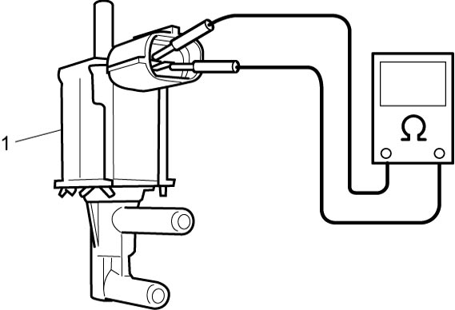
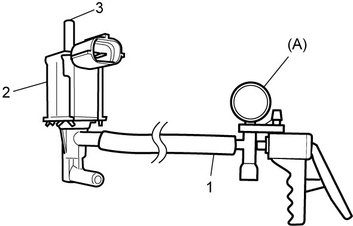
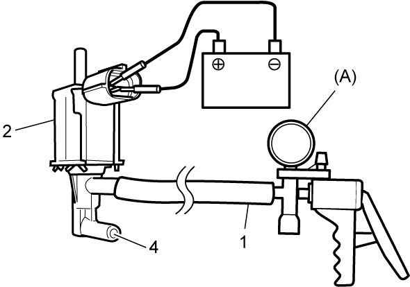

1C
| ABV-VSV Inspection |
1)Remove ABV-VSV. 
2)Check resistance between two terminals of ABV-VSV (1).
If faulty condition is found, replace ABV-VSV.

If faulty condition is found, replace ABV-VSV.
ABV-VSV resistance
37 to 44 Ω at 20 °C (68 °F)

 "Expand image")
3)Check ABV-VSV operation as follows.
If faulty condition is found, replace ABV-VSV.
If faulty condition is found, replace ABV-VSV.
b)Close port (3) with your finger or a rubber plug and check that vacuum of –60 kPa (–0.6 kgf/cm2, –8.7 psi, –0.6 bar) can be applied, and the vacuum decreases when the port is open.

 "Expand image")
c)Connect 12 V battery to ABV-VSV terminals and check that vacuum of –60 kPa (–0.6 kgf/cm2, –8.7 psi, –0.6 bar) can be applied when port (4) is closed with your finger or a rubber plug, and the vacuum decreases when the port is open.

 "Expand image")